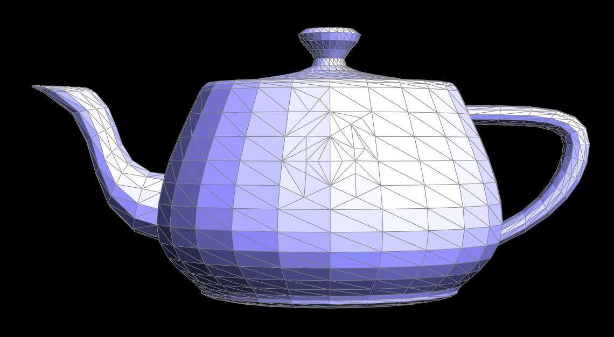

In this assignment, I explored geometric modeling techniques to construct and manipulate curves and surfaces.
Starting with modeling smooth curves, I coded the de Casteljau algorithm to approximate Bezier curves from
control points. Extending this to surfaces, I ultimately leveraged the half-edge data structure to represent
triangle meshes and implement an efficient upsampling method. I particularly enjoyed experimenting with
mesh pre-processing in the final section, where different adjustments, such as selecting which and how many
edges to split, produced interesting effects in the GUI.
Section I: Bezier Curves and Surfaces
Part 1: Bezier curves with 1D de Casteljau subdivision
The de Casteljau algorithm takes in n control points, then linearly interpolates intermediate control points at
a
parameter t until n=1, when there is only one remaining. The entire Bezier curve is evaluated at all t
values between 0 to 1. I implemented the evaluateStep() function, which iterates through a for loop
that performs a lerp for each of the points.size()-1 intermediates, then passes them on to the next
recursive step.
An example Bezier curve is defined by 6 control points and created through the following levels of
evaluation:
Original Points
Step 1
Step 2
Step 3
Step 4
Step 5
Bezier Curve
Different Bezier Curve
Part 2: Bezier surfaces with separable 1D de Casteljau
Extending to Bezier surfaces, the de Casteljau algorithm above operates one dimension at a time. In the first
dimension, n Bezier curves are evaluated and parameterized by u. In the second, the points computed at u on
each of the n curves serve as control points for a "moving" Bezier curve, which is parametrized by v. I
implemented the evaluate1D() function to recursively call evaluateStep() on points in
3D until one remains. Next, evaluate() runs evaluate1D() n times along the first
dimension, then once along the second with the resulting n control points. The surface below is generated:
bez/teapot.bez
Section II: Triangle Meshes and Half-Edge Data Structure
Part 3: Area-weighted vertex normals
I implemented area-weighted vertex normals with a for loop through each face incident to a given vertex. After
identifying a face's three vertex positions, I computed its normal using the cross product of two edge vectors
(v_b - v_a), weighted by its area. To find the final area-weighted vertex normal, I accumulated the
sum of these face normals across the iterations and normalized.
Flat Shading (w/o vertex normals)
Phong Shading (w/ vertex normals)
Part 4: Edge flip
I implemented the edge flip operation by reassigning the halfedges, vertices, edges and faces of a mesh such
that an edge dividing two triangles would instead connect the perpendicular vertices. A recommendation that
helped a lot was drawing out and labeling the meshes before and after the edge flip. While coding this out, I
also realized that trying to only reassign elements that were altered was error-prone and difficult to debug.
Instead, an implementation trick that I used was to comprehensively write out all elements and their
reassignments.
Before
After Some Edge Flips
Part 5: Edge split
I implemented the edge split operation by creating two new edges from the chosen edge, in addition to two
connecting the perpendicular vertices to the new midpoint vertex. This operation also involved reassigning the
original two triangles' half edges and creating 6 more respective to the now four triangles. Just like the edge
flip operation, I also ended up comprehensively writing out the original elements, allocating new elements and
assigning/reassigning all elements.
Before
After Some Edge Splits
Before

After Both Edge Flips and Splits
Part 6: Loop subdivision for mesh upsampling
To implement the loop subdivision operation, I first computed and stored the updated vertex positions:
(1 - n * u) * v->position + u * original_neighbor_position_sum for old vertices and
(3.0 / 8.0) * (a + b) + (1.0 / 8.0) * (c + d) for new ones. Then, I implemented 4-1
subdivisions over the mesh by iterating over and splitting all original edges (and also marking the new vertex
and two new perpendicular edges), then flipping new edges that connected old and new vertices. Finally, I copied
over the updated vertex positions. An interesting implenentation trick that I used while navigating the
half-edge data structure was leveraging the twin() and next() functions, realizing
how half-edges are the source of connection to easily navigate the mesh to appropriate vertices.
Observing how meshes behaved after loop subdivision, I saw that sharp corners and edges became smoothed out.
This can be seen in the followng subdivision of the cow mesh, specifically looking at how sharp edges
that shape its head get rounder:
Before
After Loop Subdivision
By pre-splitting some edges neighboring these sharp corners and edges, I can introduce more vertices to help
preserve the sharpness and reduce this effect:
Pre-splitting Some Edges
Sharper Compared to Other Edges
The images below record several iterations of loop subdivision on the cube mesh, which becomes slightly
asymmetric after repeated subdivisions. To explain this, as seen in the second image of the original cube
mesh, the diagonals of each face are not oriented the same way. When subdivision proceeds, this initial
asymmetry grows with additional edges: even after the first subdivision, we can see that the front
face/square is already distorted.
Original Cube Orientation 1
Original Cube Orientation 2
Subdivision 1
Subdivision 2
Subdivision 3
Subdivision 4
I can pre-process the cube mesh with the following edge flips and splits so that it subdivides
symmetrically. Now, all faces of the cube have symmetric meshes, allowing the subdivision procedure to
similarly
be symmetric and alleviating the effects.